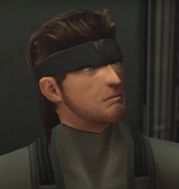
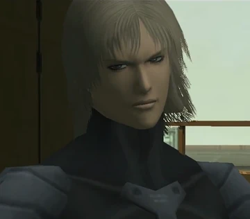
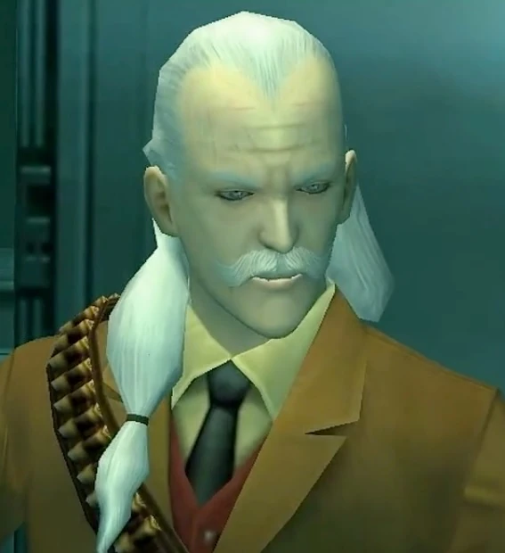
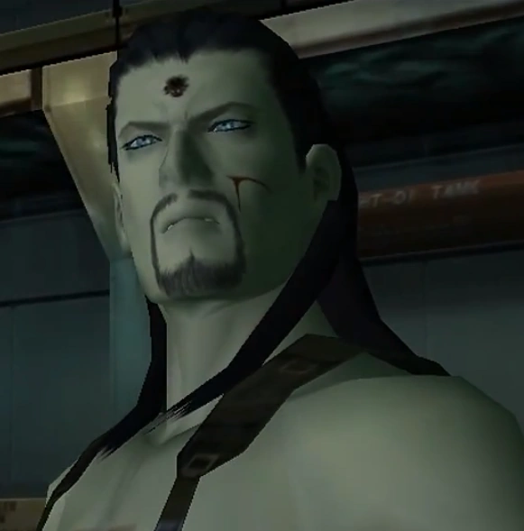

Metal Gear Solid II: Sons of Liberty
Metal Gear Solid 2: Sons of Liberty is a stealth game developed by Konami Computer Entertainment Japan and directed by Hideo Kojima. It was released for the PlayStation 2 in 2001.
Gameplay
Metal Gear Solid 2: Sons of Liberty is an action-adventure stealth game. The player must navigate the protagonist, Solid Snake, through the game's environments without being detected by enemies. The game is played from a third-person perspective and features both on-foot and vehicle-based gameplay. The player can use a variety of weapons and gadgets to defeat enemies and solve puzzles.
Characters
-

Solid Snake
Solid Snake is a legendary soldier and the main protagonist of the Metal Gear series.
-

Raiden
Raiden is a former child soldier and a protagonist in Metal Gear Solid 2: Sons of Liberty.
-

Revolver Ocelot
Revolver Ocelot is a master gunslinger and a recurring antagonist in the Metal Gear series.
-

Vamp
Vamp is a member of Dead Cell with vampiric abilities and a key antagonist in Metal Gear Solid 2.